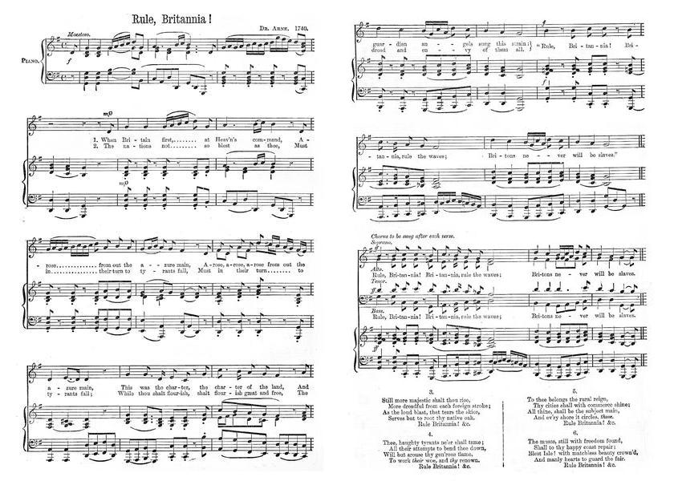

Three songs to the tune "Rule Britannia"
Trois chants sur l'air de "Règne Britannia"
Tune - Mélodietune of "Rule Britannia" by Thomas Arne
from the Masque "Alfred the Great" performed on 1st August 1740
Sequenced by Harold Doolan

|
To the tune:
This popular British national air was originally included in Alfred, a "masque" (festive courtly entertainment involving music and dancing, singing and acting, within an elaborate stage design, presenting a deferential allegory flattering to the patron) about Alfred the Great and first performed at Cliveden, country home of Frederick, Prince of Wales , on 1 August 1740, to commemorate the accession of George II and the third birthday of the Princess Augusta. The masque linked the prince with both the medieval hero-king Alfred the Great's victories over the Vikings and with the current building of British sea power - exemplified by the recent successful capture of Porto Bello from the Spanish by Admiral Vernon on 21st November 1739. The Scottish poet James Thomson (1700 - 1748) wrote the words for "Rule Britannia" that were set to music by the English composer Thomas Arne (1710 - 1778). The song became one of the most well-known British patriotic songs. "Rule, Britannia!" was seized upon by the Jacobites who altered Thomson's words to the present pro-Jacobite versions. The original lyrics were: 1. When Britain first, at Heaven's command Arose from out the azure main; This was the charter of the land, And guardian angels sang this strain: " Rule, Britannia! rule the waves: "Britons never will be slaves." 2. The nations, not so blest as thee, Must, in their turns, to tyrants fall; While thou shalt flourish great and free, The dread and envy of them all... Source "Wikipedia" (cf. Liens). |
A propos de la mélodie:
Cet air patriotique britannique fameux a été composé, à l'origine pour "Alfred", un divertissement de cour, appelé "masque", mêlant la musique, le chant, le théâtre dans des décors raffinés et représentant une allégorie destinée à flatter le commanditaire. Le sujet en était Alfred le Grand. La première représentation fut donnée à Cliveden, la résidence campagnarde de Frédéric, Prince de Galles , le 1er août 1740, pour commémorer l'avènement de Georges II et le 3ème anniversaire de la Princesse Auguste. Le spectacle faisait un lien entre les victoires du roi-héros médiéval Alfred le Grand sur les Vikings et l'édification en cours de la puissance navale britannique, illustrée par la récente victoire de Porto Bello remportée sur l'Espagne par l'Amiral Vernon, le 21 novembre 1739. Le poète écossais James Thomson (1700 - 1748) écrivit les paroles de "Rule Britannia" et la musique est du compositeur anglais Thomas Arne (1710 - 1778). Le chant devint l'un des chants patriotiques les plus populaires de Grande Bretagne. Les Jacobite s'en emparèrent et modifièrent les paroles de Thomson pour en faire les versions Jacobites qu'on va lire. Les paroles originales étaient les suivantes: 1. Depuis qu'un arrêté du Ciel Fit surgir Britannia de l'onde, Un pacte à ce pays incombe, Inscrit au céleste graduel: "Toi, Britannia, règneras sur les mers; Ton peuple à jamais ignorera les fers! 2. Les pays moins favorisés Aux tyrans, tour à tour, succombent, Toi, grande et libre, inspire au monde La crainte, l'envie, le respect... Traduction Ch. Souchon (c) 2010 |
1° Britannia, rouse at Heaven's Command!
1° Britannia, le Ciel n'attend pas!
Birthday of the Chevalier de Saint Georges

|
1. Britannia, rouse, at Heav'n's command!
And crown thy native P[rinc]e again, And crown thy native P[rinc]e again, Then Peace shall bless thy happy land And Plenty pour in from the main: "Then shall thou be, Britannia, thou shall be, From home and foreign tyrants free." (twice) 2. Behold great C[harle]s, thy godlike Son, With majesty and sweetness crown'd; With majesty and sweetness crown'd; His worth th'admiring world doth own Anf Fame's loud trump proclaim the sound. Thy Captain, him, Britannia, him declare, Of Kings and Heroes he's the Heir. (twice) 3. The second hope young Hero claims, Th' extended empire of the main; Th' extended empire of the main; His breast with fire and courage flames, With Nature's bounds to fix thy reign. He Neptune -like, Britannia will defy, All but the thunder of the sky (twice) 4. The happiest states must yield to thee, When free from dire corruption's thrall; When free from dire corruption's thrall; Of land and sea you'll Emp[er]or be, And ride triumphant round the ball; Britannia unite; Britannia must prevail, Her pow'rful hand must guide the scale. (twice) 5. Then, Britons, rouse, with trumpet's sound Proclaim this solemn happy day; Proclaim this solemn happy day; ( Tenth of June ) Let mirth with chearful music crown'd, Drive sullen thoughts and cares away. Come, Britons, sing, Britannia, draw thy sword, And use it for your rightful Lord. (twice) Source: The True Loyalist, page 33, 1779 |
1. Britannia, le Ciel n'attend pas
Debout, rends son trône au vrai roi Debout, rends son trône au vrai roi Et la paix reviendra vers toi, La prospérité, par surcroît Britannia, tu seras affranchie, A l'étranger et chez toi, des tyrannies! (bis) 2. Charles, ton fils, semblable aux dieux, S'avance, calme et majestueux, S'avance, calme et majestueux: Salué par les trompettes de La Renommée, sous tous les cieux! Britannia, c'est le chef qu'il te faut; Il est l'héritier de rois et de héros. (bis) 3. Il nous rend l'espoir, ce héros, De régner partout sur les flots. De régner partout sur les flots. Coursier aux fulminants naseaux, La nature est son seul enclos! Britannia, tel Neptune il prétend Dompter, hormis la foudre, les éléments! (bis) 4. Des corrompus brisons les fers! Que nul ne se mette en travers Que nul ne se mette en travers De ta voie, sur terre ou sur mer! Chevauche par tout l'univers ! Britannia, sois unie, tu vaincras! La balance du monde pende à ton bras! 5. Entendez sonner la trompette Amis, ce jour est jour de fête! ( Dix Juin ) Amis, ce jour est jour de fête! La joie vienne au son des musettes Chasser les soucis de nos têtes. Britannia, chante et arme ton bras Pour la défense de ton seigneur de droit! (Trad. Christian Souchon (c) 2011) |
2° When our great Prince with his choice band
2° Quand entouré d'amis choisis
Prince Charles's Landing at Moidart
|
1. When our great P[rin]ce with his choice band,
Arriv'd from o'er the azure main, Heav'ns smil'd with pleasure With pleasure on the land And guardian angels sung this strain: "Go, brave Hero, brave Hero boldly go, And wrest thy sceptre from thy foe." (twice) 2. Th' Usurper now and his vile brood, Shall in their turn to thee give place. While thou shalt prosper, Shalt prosper, great and good, In glory of the S[tuar]t race. "Go, brave Hero, brave Hero boldly go, And wrest thy sceptre from thy foe." (twice) 3. The factious W[hig]s shall lose their aim, Their dire attempts ne'er shake thy throne; This shall but rouse, But rouse each loyal flame, And work their woe and thy renown. "Go, brave Hero, brave Hero boldly go, And wrest thy sceptre from thy foe." (twice) 4. Though Dutch and Devils should combine, To prop Hanover's sinking cause; Kind Heav'n will favour Will favour thy design. And re-establish Briton's laws. "Go, brave Hero, brave Hero boldly go, And wrest thy sceptre from thy foe." (twice) 5. Thy exil'd friends of that day fond, Shall to thy court with joy repair; Blest,day to see thee, at last, To see thee crown'd, Britannia's hopr and S[tuar]t's Heir. "Go, brave Hero, brave Hero boldly go, And wrest thy sceptre from thy foe." (twice) 6. May gracious Heav'ns thy steps defend From dangers, plots, and Wh[ig]gish snares, And bring thee safe, Safe to a glorious end, Blest with long peace, and full of years. "Go, brave Hero, brave Hero boldly go, And wrest thy sceptre from thy foe." (twice) Source: "The True Loyalist", page 35, 1779. |
1. Quand entouré d'amis choisis
Le Prince descendit à terre, Le Ciel soudain se découvrit, Le ciel soudain se découvrit Et des anges gardiens chantèrent: "Va, chevalier sans reproche et sans peur, Arrache le sceptre des mains des voleurs." (bis) 2. L'engeance de l'usurpateur. Doit à présent vider la place Pour que règne dans la splendeur Pour que règne dans la splendeur Des Stuart la glorieuse race! "Va, chevalier sans reproche et sans peur, Arrache le sceptre des mains des voleurs." (bis) 3. Les Whigs factieux manquent leur but. Ils ébranlent en vain ton trône Attisant le feu, tout au plus, Attisant le feu tout au plus Qui te grandit et les consume. "Va, chevalier sans reproche et sans peur, Arrache le sceptre des mains des voleurs." (bis) 4. Alliés du diable, les Germains Volent au secours de Hanovre. Mais Dieu seconde tes desseins, Mais Dieu seconde tes desseins: Pour le droit des Britons Il œuvre. "Va, chevalier sans reproche et sans peur, Arrache le sceptre des mains des voleurs." (bis) 5. Et tes compagnons vont pouvoir Passer de l'exil à ta cour; Pour Britannia et pour les Stuart, Pour Britannia et pour les Stuart, Ton couronnement: quel beau jour! "Va, chevalier sans reproche et sans peur, Arrache le sceptre des mains des voleurs." (bis) 6. Puisse le Ciel te préserver Des Whigs et toutes leurs traitrises, Afin que la gloire et la paix, Afin que la gloire et la paix, Soient de ton long règne l'assise! "Va, chevalier sans reproche et sans peur, Arrache le sceptre des mains des voleurs." (bis) (Trad. Christian Souchon (c) 2011) |
3° When Royal Charles by Heaven's Command
3° Depuis qu'un arrêté du Ciel
A call to the Prince in Exile
|
1. When Royal Charles, by Heaven's command,
Arriv'd in Scotland's noble plain, Arriv'd in Scotland's noble plain, Thus spoke the warriors of the land And guardian angels sung the strain: "Go on, brave Youth, go combat and succeed, For thou shalt conquer - 'tis decreed." (twice) 2. At Falkirk's fam'd victorious field Where Hawley, proud, was forc'd to yield. Where Hawley, proud, was forc'd to yield. Let the applauding world be taught How well brave Charles's heroes fought: Ah, still brave youth, thou'lt combat and succeed, Yes, thou shalt conquer -'tis decreed. (twice) 3. Though thou art banish'd for a while Yet fortune still on thee shall smile; Yet fortune still on thee shall smile; Thou shalt return triumphant o'er thy foes, And ruling Britain, end our woes. Usurper then begone, begone with all thy race And to our rightful Prince give place. (twice) Source: Robert Malcolm's "Jacobite Minstrelsy", page 350, 1828. |
1. Depuis qu'un arrêté du Ciel
Fit en Ecosse venir Charles Fit en Ecosse venir Charles Les clans font un vœu solennel. Par leur bouche, les anges parlent: "Va, jeune homme, au combat sois vainqueur, Va, l'arrêté du Ciel est en ta faveur." (bis) 2. A Falkirk, nous avons vaincu. Hawley a dû vider la place. Hawley a dû vider la place. Ah, que le monde étonné sache, Charles, quelle est notre valeur! Oui, encore, tu peux être vainqueur Ainsi décide le Ciel en ta faveur. (bis) 3. Ton exil ne durera pas. Car la Fortune se déride. Car la Fortune se déride. Tu triompheras des perfides Et nous renaîtrons sous ta loi. Usurpateur, ton engeance avec toi, Faites place nette au légitime roi! (bis) (Trad. Christian Souchon (c) 2011) |
|
In spite of the disastrous defeat at Culloden, the Jacobite muse was, as we see, still confident in Charles's triumphant return. His reception at the Court of France after his adventurous escape and the protection extended by the French government to the exiles who followed him afforded a ground for such hopes.
Charles obtained from King Louis XV a private interview to which he repaired with three gorgeous carriages and a cavalcade of young noblemen, to make of it a solemn reception. The King who was attending a Council of Ministers concealed his annoyance about this vain pomp and welcomed him: "My dearest Prince", said he, "I thank Heaven for thus seeing your Royal Highness. You have acquired immortal glory and I hope you will one day receive the reward of such extraordinary merits". Charles received other testimonies of congratulation and esteem in the high society of the country. Subsequent events however demonstrated that the French Court were never serious in their intention of supporting the cause of the Stuarts any further. In the Treaty of Aix-la-Chapelle, made public in 1748 , France acknowledged the right of the House of Hanover to the Crown of England, utterly renounced all alliance with the Pretender and his family and ceased to allow them to reside within her territory. Thus were the hopes of the unfortunate Charles extinguished for ever. Charles lingered in that country for a long time until he was sent out of the kingdom by force. He was first conducted to the Castle of Vincennes. Then his residence during the remainder of his life was chiefly in Avignon, a city belonging to the Pope, where he lived a life of retirement. Disappointment and sorrow wrought a dramatic change upon his temper and in his later years his private conduct seemed to justify in the eyes of his enemies their exultation in the downfall and extinction of his noble race. |
Malgré la désastreuse défaite de Culloden, la muse Jacobite, croyait encore, comme on le voit au retour triomphal de Charles. Sa réception à la Cour de France après toutes ses aventures et la protection accordée par le gouvernement français aux exilés qui l'accompagnaient, autorisaient apparemment de telles espérances.
Charles obtint du roi Louis XV une entrevue privée à laquelle il se rendit avec trois magnifiques carrosses et une nombreuse escorte de gentilshommes à cheval, pour en faire une réception solennelle. Le roi qui était en réunion avec ses ministres, ne parut pas se fâcher de cette vaine pompe. "Mon très cher prince, lui dit-il, je rends grâces au Ciel du plaisir que je ressens à revoir Votre Altesse Royale. Vous venez d'acquérir une gloire immortelle. J'espère que vous recueillerez un jour le fruit de tant de fatigues et tant de dangers." Charles reçut bien d'autres témoignages de congratulation et d'estime des hautes classes de la société. Les événements qui suivirent montrèrent que la Cour de France n'avait pas sincèrement l'intention de soutenir plus longtemps la cause des Stuarts. Par le Traité d'Aix-la-Chapelle, rendu public en 1748, la France garantissait à la maison de Hanovre la couronne d'Angleterre, renonçait à toute alliance avec le Prétendant et sa famille et leur interdisait de séjourner sur son territoire, mettant ainsi fin définitivement aux espoirs de Charles. Celui-ci s'attarda cependant dans ce pays encore longtemps et il fallut qu'on l'expulse du royaume manu militari. Il fut d'abord conduit au château de Vincennes. Puis, il séjourna, pour le restant de ses jours, principalement à Avignon, une cité appartenant au Pape, où il mena une vie de reclus. La déception et le chagrin eurent tôt fait de miner profondément son caractère et les dernières années de sa vie, sa conduite privée sembla justifier aux yeux de ses ennemis, leur exultation d'assister à la déchéance et à l'extinction de cette noble race. |
|
|
|